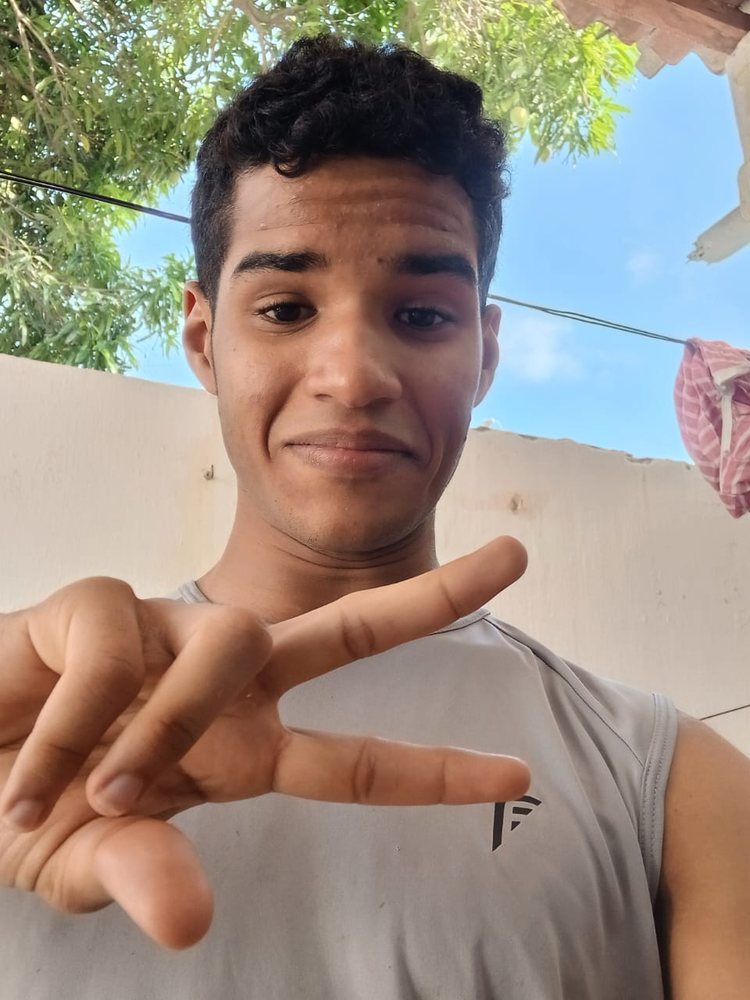

Vitor Bionic - Programador
Bem-vindo ao meu portfólio!
Aqui você encontrará uma apresentação sobre quem sou eu, meus projetos e colaborações que refletem minha paixão por programação. Cada projeto é um reflexo do meu compromisso com a criatividade, a inovação e a excelência.
Explore à vontade e conheça mais sobre mim e minhas habilidades. Fique à vontade para entrar em contato caso tenha interesse!